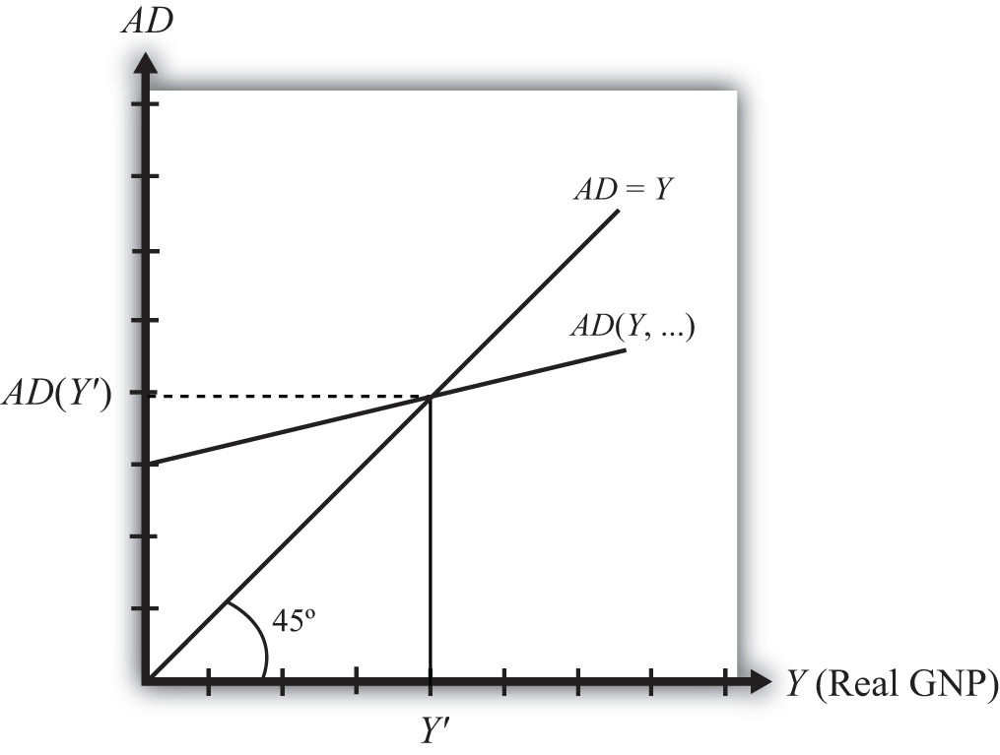

The Keynesian cross diagramDepicts the equilibrium level of national income in the G&S market model. depicts the equilibrium level of national income in the G&S market model. We begin with a plot of the aggregate demand function with respect to real GNP (Y) in Figure 19.1 "Aggregate Demand Function". Real GNP (Y) is plotted along the horizontal axis, and aggregate demand is measured along the vertical axis. The aggregate demand function is shown as the upward sloping line labeled AD(Y, …). The (…) is meant to indicate that AD is a function of many other variables not listed. There are several important assumptions about the form of the AD function that are needed to assure an equilibrium. We discuss each assumption in turn.
Figure 19.1 Aggregate Demand Function
First, the AD function is positively sloped with respect to changes in Y, ceteris paribus. Recall that ceteris paribus means that all other variables affecting aggregate demand are assumed to remain constant as GNP changes. The positive slope arises from the rationale given previously that an increase in disposable income should naturally lead to an increase in consumption demand and a smaller decrease in CA demand, resulting in a net increase in aggregate demand. Next, if GNP rises, ceteris paribus, it means that taxes and transfer payments remain fixed and disposable income must increase. Thus an increase in GNP leads to an increase in AD.
Second, the AD function has a positive vertical intercept term. In other words, the AD function crosses the vertical axis at a level greater than zero. For reasons that are not too important, this feature is critical for generating the equilibrium later. The reason it arises is because autonomous consumption, investment, and government demand are all assumed to be independent of income and positive in value. These assumptions guarantee a positive vertical intercept.
Third, the AD function has a slope that is less than one. This assumption means that for every $1 increase in GNP (Y), there is a less than $1 increase in aggregate demand. This arises because the marginal propensity to consume domestic GNP is less than one for two reasons. First, some of the additional income will be spent on imported goods, and second, some of the additional income will be saved. Thus the AD function will have a slope less than one.
Also plotted in the diagram is a line labeled AD = Y. This line is also sometimes called the forty-five-degree line since it sits at a forty-five-degree angle to the horizontal axis. This line represents all the points on the diagram where AD equals GNP. Since GNP can be thought of as aggregate supply, the forty-five-degree line contains all the points where AD equals aggregate supply.
Because of the assumptions about the shape and position of the AD function, AD will cross the forty-five-degree line, only once, from above. The intersection determines the equilibrium value of GNP, labeled Y′ in the diagram.
An equilibrium exists if the AD function crosses the forty-five-degree line from above. This occurs if three conditions hold:
Jeopardy Questions. As in the popular television game show, you are given an answer to a question and you must respond with the question. For example, if the answer is “a tax on imports,” then the correct question is “What is a tariff?”